Cursor position
Lat / Lon—
ArcGIS XY—
MGRS 6—
MGRS 8—
Lat/Long ⇄ GRID Reference ⇄ XY Coordinates
What it does, how to use it, and who built it.
GIS Helper is a coordinate conversion and tactical-marking tool. Give it any one of four coordinate systems and it returns the other three, instantly, on an interactive map — then let you plot units, zones and order of battle directly onto that same map.
Decimal degrees (DD) and degrees / minutes / seconds (DMS), with N/S/E/W hemisphere.
Military grid references at 6-digit (100 m), 8-digit (10 m) and 10-digit (1 m) precision.
Easting / Northing in metres, with the UTM zone number and hemisphere.
Search any city, address or landmark by name and get every format back.
Beyond conversion, GIS Helper doubles as a lightweight operational map. Plot friendly units, define zones, and share the whole picture with anyone on your team — no account, no server, no install.
Company HQ (flag), Support Platoon (armoured vehicle), SIGINT Platoon (antenna), ISR Platoon (drone), HUMINT Platoon (detective) and Special Task (star, diamond or circle) — plus any custom types you define yourself.
Draw named, colour-coded zones with an automatic area calculation in m² or km². Each type of zone can carry its own name, colour and fill opacity.
Each deployment records commander, troop strength, vehicles, arms & ammo, and special equipment — all visible in the marker popup.
Take the whole plan away as a JSON file, a PDF sheet or a PNG picture — with your choice of map type, scale bar and north facing — then upload a teammate's file to keep working from it.
Everything lives in your browser — nothing is uploaded anywhere. Use the Download button to take the plan away as JSON, PDF or PNG.
Most online converters go one direction, quietly drop the hemisphere, and make you guess a UTM zone. GIS Helper converts everything at once — so a lat/lon from a phone, an MGRS from a field form, and an XY for ArcGIS all stay in sync on the same screen. Nothing to install, nothing to sign up for.
New here? Open the Guide tab for a step-by-step walkthrough with real screen captures.
Click the Theme button (the palette icon) in the top bar. Each theme retints the whole interface — background, glass, accent glow and ambient blobs:
Mission-control clarity. Ultra-dark teal base with an electric mint glow for active states and CTAs.
Premium creative dark. Charcoal base with a rich violet glow and cool indigo glass tint.
Enterprise command. Classic navy with vibrant emerald accents for authoritative dashboards.
Warm espresso tones with sunset-orange accents and a gold-tinged glass edge.
Your selected theme is remembered in this browser and applied automatically on your next visit.
GIS Helper is one page with six numbered cards down the left and the map on the right. Work top to bottom: find a point, read the coordinates, mark up the ground, then take the result away as a file. The pictures below are real screen captures of the running app, not sketches.
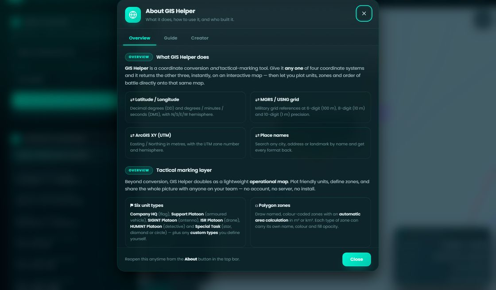
Status pill, the Deploy / Zones panel toggles, Theme, Download, Upload and About.
Input, the converted coordinates, and the live cursor readout.
Deployments and zones. Each collapses its list until you open it from the top bar.
Save, share, upload and export — plus the export options used by the Download dialog.
Zoom controls, base-map switcher, cursor HUD, scale bar and attribution.
No account, no server. Your plan lives in this browser and in the files you export.
Type anything that identifies a point, then press Enter or click Locate & convert. Four input formats are understood.
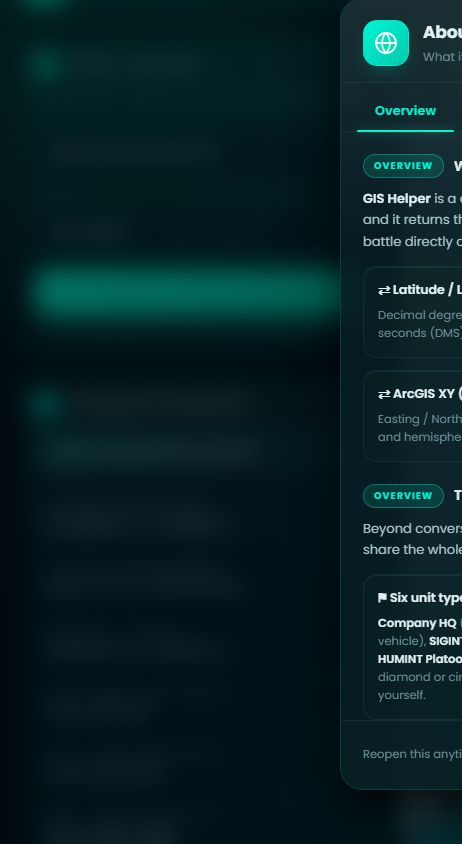
Any free-text search — cities, addresses, landmarks.
Statue of Liberty, New York
Eiffel Tower
Decimal degrees or DMS, with or without hemisphere letters.
40.6892, -74.0445
40° 41' 21" N, 74° 02' 40" W
6-digit (100 m), 8-digit (10 m) or 10-digit (1 m) precision.
18T WL 807 046
18T WL 80735 04695
Easting / Northing in metres. Put the zone in the box beside the Format menu, or inline.
580736, 4504695
18N 580736 4504695
Pasting XY with no zone asks you for the UTM zone before converting. Grid references
with no spaces — 18TWL8073504695 — are accepted too.
Every format of the chosen point is shown at once, and every row is clickable — click one to copy just that value, or use Copy results as JSON for all of them in one go.
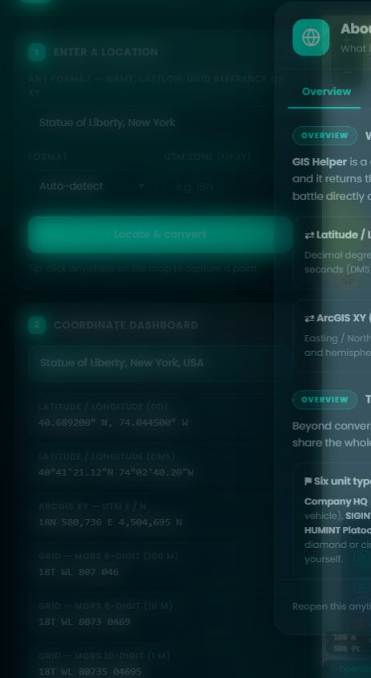
MGRS / USNG is only defined between 80°S and 84°N. Outside that band you still get lat/lon and XY, but the grid rows read “Out of MGRS range”.
Hover anywhere on the map and the values follow you, both in card 3 and in the Cursor position panel on the map itself. Click to lock a point — the dashboard, the marker and the popup all follow.
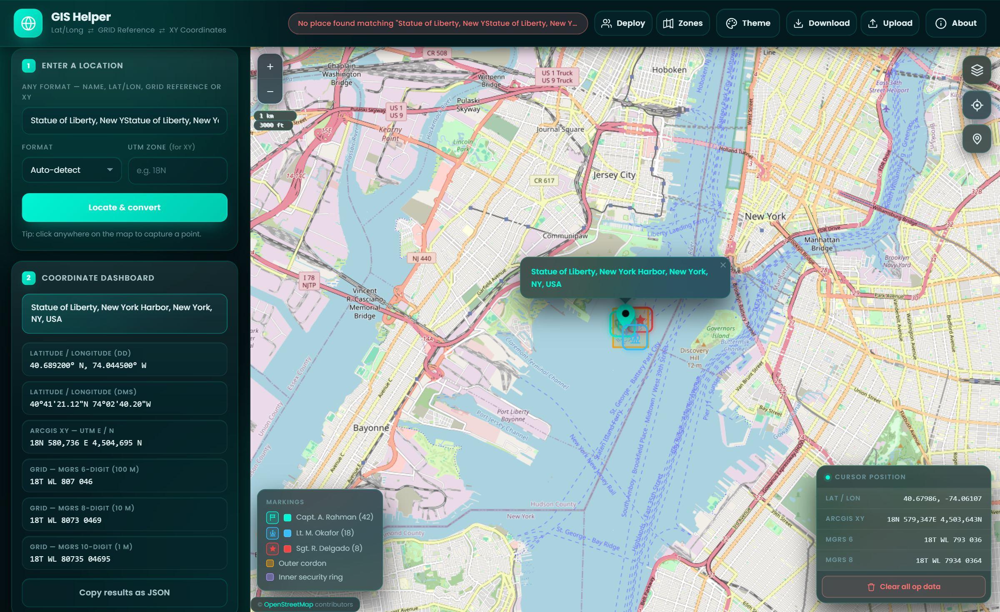
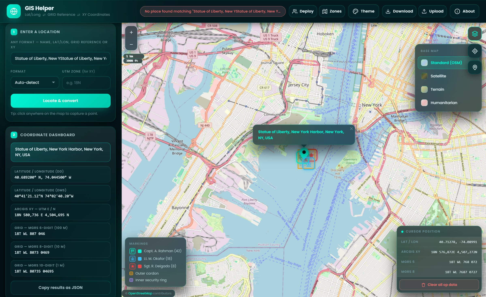
Open this card with the Deploy button in the top bar. Pick a unit type, fill in whoever you need, and press Place on map.
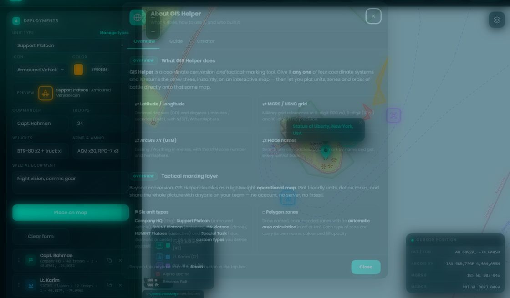
Six built-in types, each locked to its own icon set. Special Task offers three shapes.
Defaults per type; override it to colour by task rather than by unit.
Commander, troops, vehicles, arms & ammo and special equipment — all shown in the marker popup and on the printed sheet.
Drops the marker at the current map indicator. Markers are draggable and stay in sync.
Drag the grip on a row. The order is your order of battle and drives the legend and the printed table. Keyboard: Alt+↑/↓.
Copies the unit beneath the original so you can edit it into a second element.
Flag icon · command element and headquarters.
Armoured Vehicle icon · fires, logistics, transport.
Antenna / Signal Tower icon · signals & electronic intelligence.
Drone icon · aerial surveillance & reconnaissance.
Detective icon · human intelligence & liaison.
Three icons available — pick whichever fits the element you are plotting:
Click Manage types next to the Unit type label. Name it, tick one to three icons, pick a colour. Custom types are saved in this browser and travel inside every exported JSON file, so a teammate's names arrive with their plan.
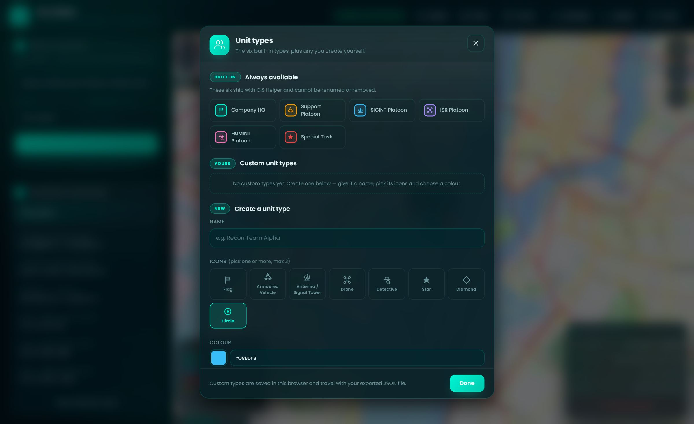
Open the Zones card with the Zones button in the top bar, choose a colour and a name, then click Start drawing and click points on the map to build a polygon. Double-click or press Stop drawing to finish.
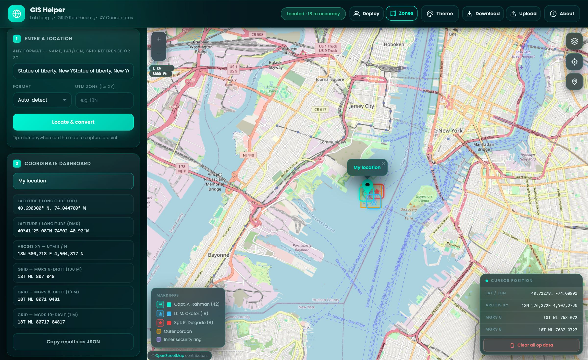
Press Download in the top bar (or the Download plan button in card 6). Choose a format, set how the map should look, tick what goes in, and press the button at the bottom of the dialog. Nothing is uploaded — the file is built in your browser.
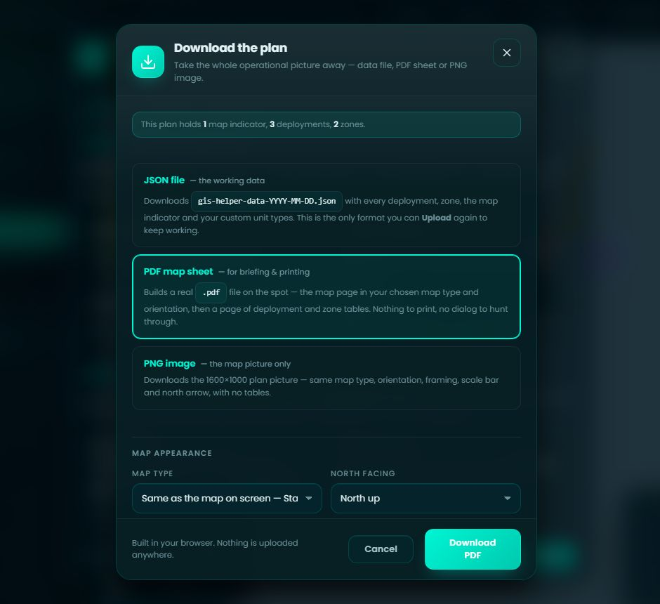
gis-helper-data-YYYY-MM-DD.json with every deployment, zone, the map
indicator and your custom unit types. This is the only format you can Upload
again, so use it to keep working or to hand the plan to someone else.
A real .pdf, written for you: page one is the map, page two onwards are
the coordinate facts and the deployment and zone tables. Open it in anything.
Auto frames the whole plan and states the scale it produced. A fixed 1:X is measured against the A4 sheet — 1 cm on the page is X/100 m on the ground — and the picture then shows whatever fits at that scale, cropping a tight plan if need be.
The same 1600×1000 picture with no tables — for a briefing slide or a message.
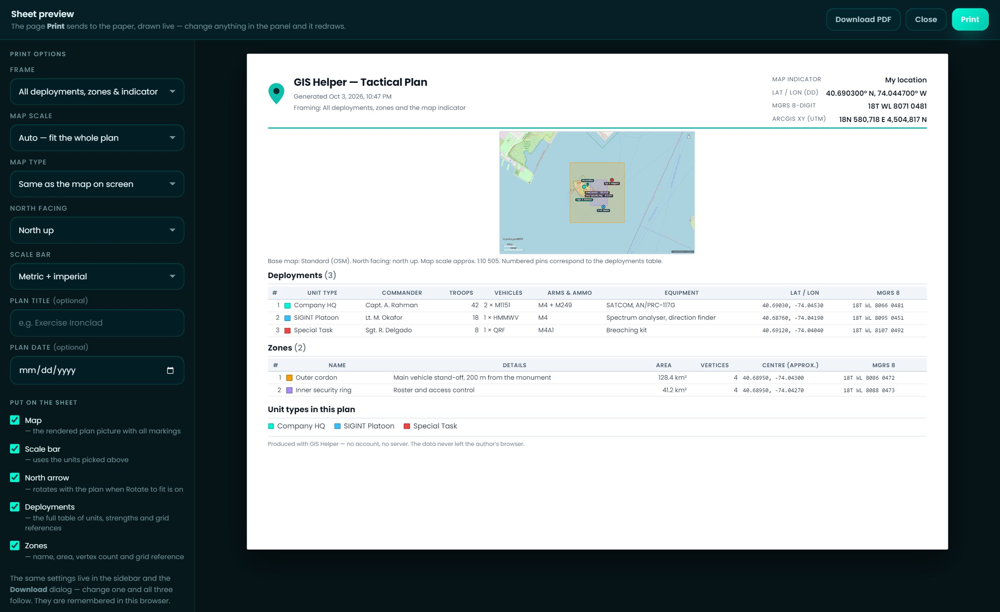
If a tile server refuses to serve tiles to the canvas, the picture quietly falls back to a schematic plan — a labelled coordinate grid with the same zones, pins and labels, minus the street imagery — and the caption tells you which you got. The map on screen is never affected.
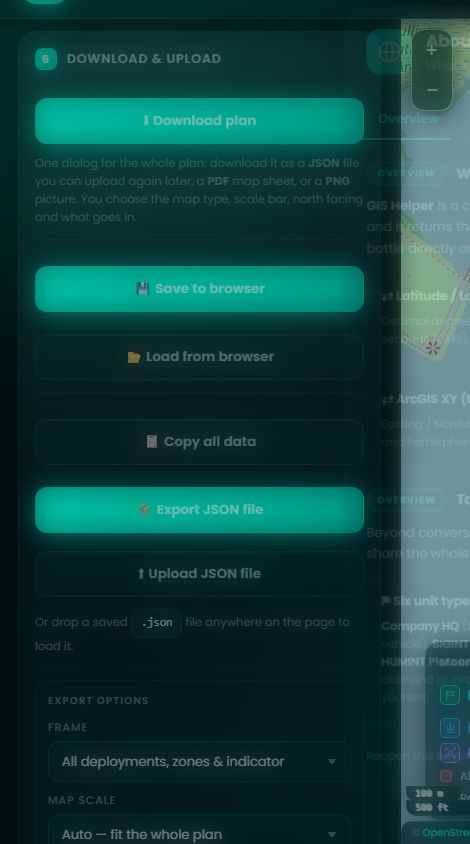
Card 6 also keeps the browser-level tools: Save to browser and Load from browser (localStorage), Copy all data (the whole session JSON on your clipboard), Preview sheet, which shows that one-page sheet on screen and redraws it as you change the options beside it, and Print report, which opens the browser's print dialog on the very same page if you would rather print it yourself.
Press Upload in the top bar and pick a .json file saved from GIS
Helper — yours or a teammate's — and carry on working from it. You can also
drag and drop a .json file anywhere onto the page.
The file's deployments and zones are added alongside yours. Your map indicator and existing markings stay exactly where they are.
Clears the map, then loads exactly what the file holds, including its map indicator. There is no undo — export first if you might want the old map back.
Always merged in, never deleted. Importing a teammate's file brings their unit names, icons and colours with it.
Files from earlier versions still import. Missing fields are filled in safely, unknown unit types fall back to Company HQ, and legacy icon names are mapped to their modern equivalents.
Round trip: Download → JSON, edit or move the file, Upload → Replace. The map you get back is the map you left, on any machine, with no account in between.
40.6892, -74.0445degrees
40°41'21"N 74°02'40"Wdeg / min / sec
18N 580736 4504695metres
18T WL 807 046100 m
18T WL 8073 046910 m
18T WL 80735 046951 m
file://.
Serve the folder over http://, or just download the JSON file.
Engineer by training · designer by stubbornness
Hi — I'm the person behind GIS Helper. I did not go to design school; I studied at MIST (Military Institute of Science and Technology, Bangladesh), which taught me a lot about engineering and approximately nothing about colour theory. Everything you see here is self-taught, mildly obsessive, hobbyist-grade web design. The four themes were mostly me asking "does this mint go with this teal?" and then reloading the page forty times.
What I do know is the special kind of tedium that comes from needing one coordinate in three different formats at once. Someone hands you a lat/lon, the field form wants MGRS, the GIS software wants UTM Easting and Northing, and the only converter you can find online goes one direction, drops the hemisphere, and asks you to pick a UTM zone from a dropdown you're not sure about. Then you're counting grid digits by hand at 2 a.m. hoping you didn't shave off a zero. One day I got fed up enough to build a tool instead of complaining about it.
GIS Helper takes whatever you've got — a place name, a lat/lon pair, a 6- or 8-digit grid reference, a raw XY — and converts it into every other format at once, on a map, live. Like a very patient GIS analyst who never mixes up their eastings and northings.
Then it grew a second job. Somewhere between planning a rehearsal and actually drawing it on a sheet of acetate, I realised I was doing the same thing twice: pinning down where everything is, and then separately what is there. So I gave it a tactical marking layer — six unit types with their own icons (Company HQ, Support, SIGINT, ISR, HUMINT and Special Task), polygon zones that calculate their own area, and a save/export button so the plan leaves my laptop in a form other people can actually open.
No accounts, no server, no database. Everything is stored in your browser, and a single JSON file carries the whole order of battle to whoever needs it. It is the smallest tool that does the job, which is roughly the only kind of tool I trust with information nobody should have to upload to a stranger's database.
It started as a weekend fix for my own field notes and quietly turned into… this. I hope it saves you as much time (and head-scratching) as it's saved me.
The six built-in types, plus any you create yourself.
These six ship with GIS Helper and cannot be renamed or removed.
Change the details of this marking.
The page Print sends to the paper, drawn live — change anything in the panel and it redraws.
Generated
| # | Unit type | Commander | Troops | Vehicles | Arms & ammo | Equipment | Lat / Lon | MGRS 8 |
|---|
| # | Name | Details | Area | Vertices | Centre (approx.) | MGRS 8 |
|---|
Take the whole operational picture away — data file, PDF sheet or PNG image.
Map type defaults to whichever base map the live map is showing. Choosing a different one for the download does not change the map on screen. North up keeps the plan upright; Rotate to fit spins it onto its longest axis so a long or diagonal plan fills the frame, and the north arrow turns with it.
Map scale is measured against the A4 landscape sheet the PDF is laid out on: at 1:25 000, one centimetre on the sheet is 250 m on the ground. Auto frames the whole plan and prints the scale it came out at; a fixed scale always wins, which on a tight plan means the picture crops it — the caption tells you when that happens.
A JSON download always carries everything, regardless of these ticks — the file is meant to be re-imported losslessly.
This map already has data on it. How should the file be applied?
This action cannot be undone.